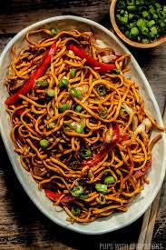

PIZZA
Pizza is a delicious and versatile dish that originated in Italy. It consists of a flat dough base topped with tomato sauce, cheese, and various toppings like meats, vegetables, and herbs. Baked in an oven, pizza is known for its crispy crust and melty cheese. Whether you prefer a classic Margherita or something more adventurous, pizza is a beloved meal enjoyed worldwide.

PIZZA
BURGER
Burger: A burger is a popular fast food made of a ground beef patty served inside a bun, often topped with cheese, lettuce, tomato, onions, pickles, and condiments. It's a customizable meal, loved for its juicy, savory flavor and convenience.

Burger
NOODLES
Noodles: Noodles are a staple in many cuisines, made from flour and water, typically boiled or stir-fried. Whether served in soups, salads, or as a main dish, noodles come in various shapes and sizes and can be paired with meats, vegetables, and sauces for a satisfying meal.

Noodles